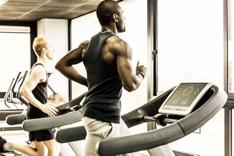
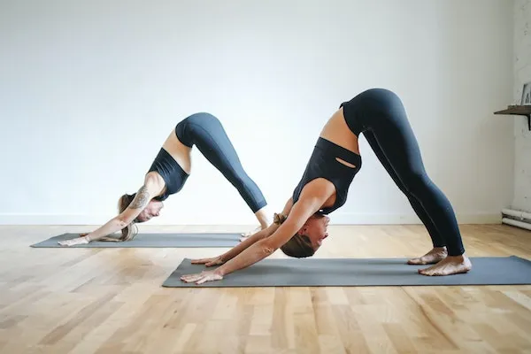

Endurance workouts are designed to raise your heart rate and get your blood pumping faster. Endurance workouts
are essentially cardiovascular workouts, working your body out aerobically. The goal of an endurance workout is to
increase the number of times your muscles can contract before they become too tired.
The simplest way to imagine this is by looking at a runner. Their goal is to increase the distance and the intensity
with which they can run at one time. To do this, they must improve their cardiovascular fitness and enhance the
amount of exercise their muscles can handle before collapsing!
Weightlifters also need to think about endurance. For endurance weight lifters, their goal is to increase the number
of repetitions their muscles can take lifting a particular weight before they collapse.
Examples of endurance exercises include the following:

Strength workouts, alongside endurance workouts, are the most popular types of training, especially in the gym.
Strength exercises are movements designed to build muscle mass. This happens by working the muscle until it
'rips.' The ripped muscle then repairs itself and grows back larger and stronger than it was before.
Strength training isn't only limited to weight machines and dumbbells because you can build strength through
resistance bands and bodyweight exercises as well. Strength training isn't just for weightlifters either, because we
need muscles for athletics and simple everyday movements such as lifting shopping bags or cutting wood if you
live on a farm.
Balance is essential for all able bodies, not just for athletes. Without adequate balance, we would struggle even to
stand up straight, let alone walk to the shops or start lifting weights!
Balance rarely gets its own focused workouts, but balance-focused exercises can help to improve your overall
health and fitness and contribute to broader fitness goals. A typical workout could target the lower body to improve
balance or the core for stability.
Yoga classes are great for strengthening both your body and mind.
A basic yoga session will consist of an instructor going over various stretches
and poses with you while you focus on breath and mindfulness.

At your first session, don’t be worried if you can’t stretch into every single
pose. You’ll adapt over time and become more flexible.
You should start off with a basic yoga course. There are other variations
available, such as hot yoga, but these are much more intense.
Before going to your first yoga class, make sure you have the right gear.
You typically need to bring your own yoga mat, but most studios have
basic loaners available.
You’ll also want to make sure you’re dressed appropriately. A loose
shirt and some comfortable yoga pants will help you get into every
pose.
Most fitness classes focus on one main type of exercise like yoga or cycling,
but you can also take hybrid classes to keep things fresh.
Hybrid classes incorporate different elements of fitness to work out several
different areas of the body.
Spenga is one of the most popular hybrid workout regimens to appear
in recent years. This class is focused on enhancing your strength and
endurance through a combination of yoga, HIIT training, and spin.